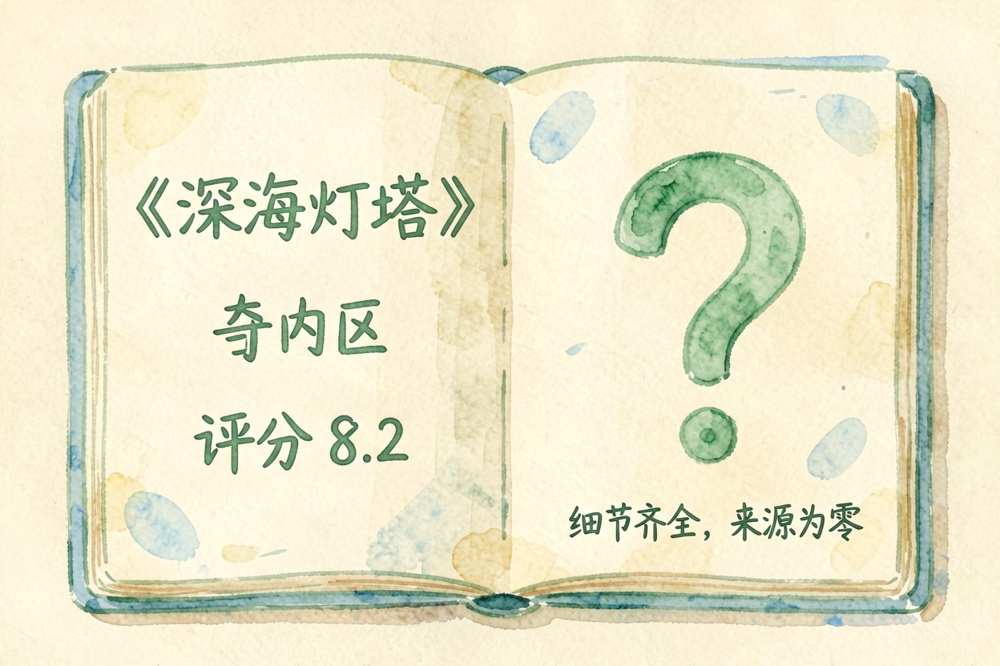
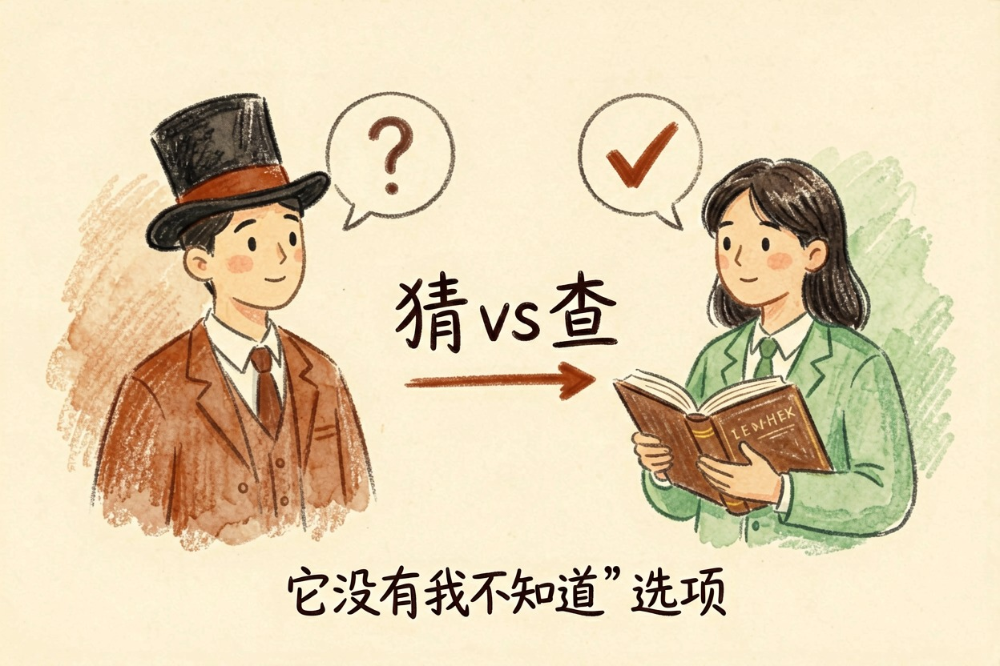
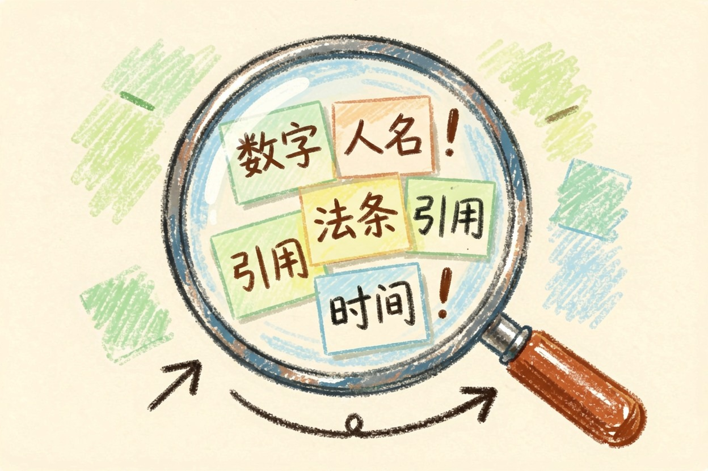
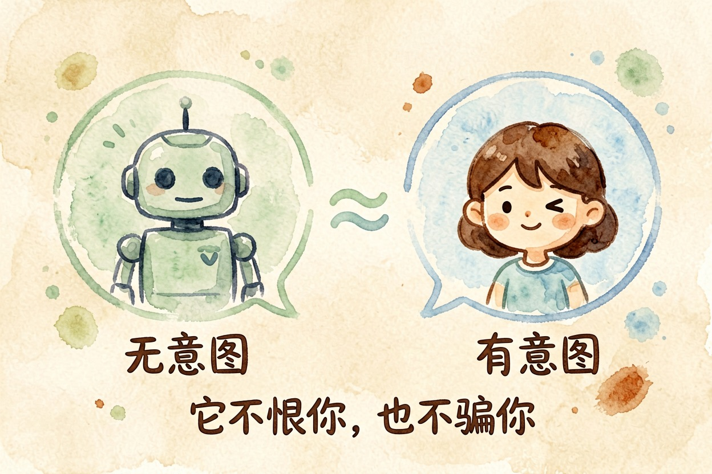
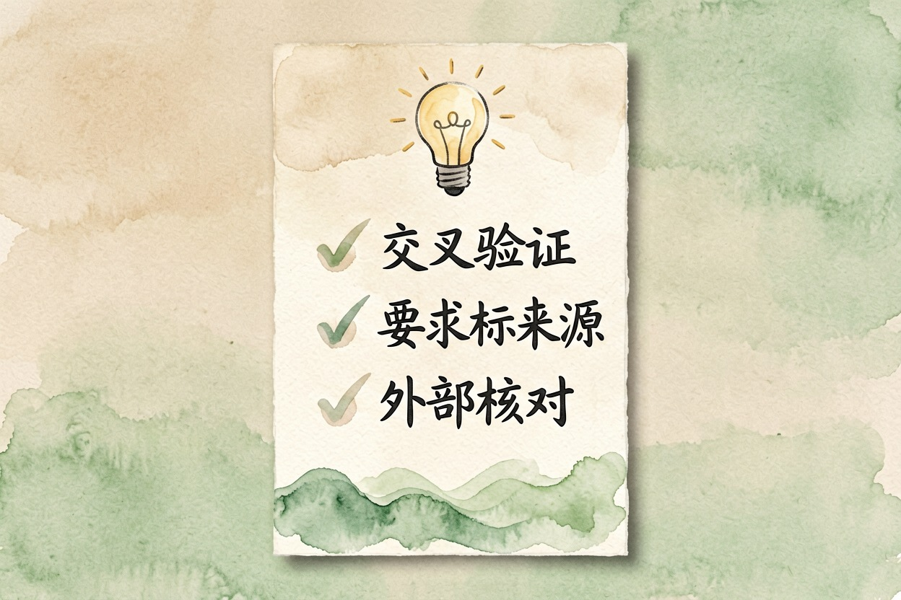
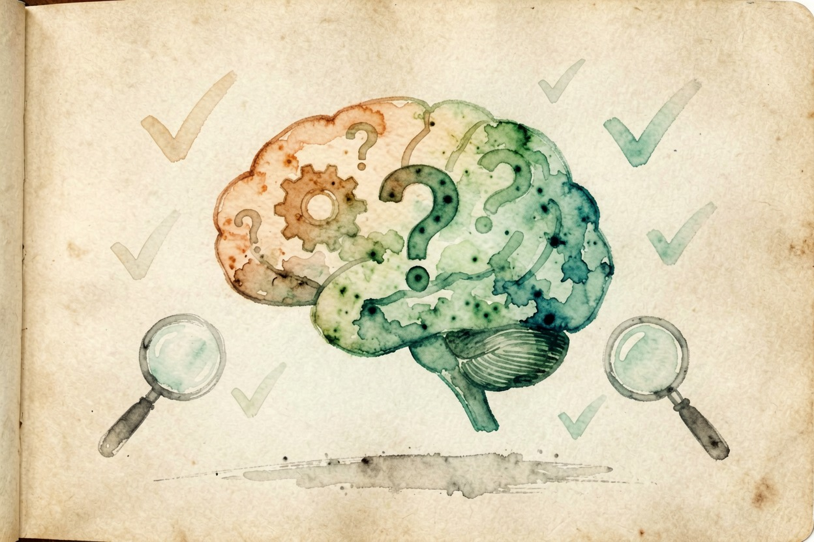

AI 幻觉是什么？为什么会一本正经胡说
它能把不存在的书、不存在的法条说得有板有眼，原因很朴素：它从不查资料，只是按概率把话说圆。
AI 幻觉是什么？一句话：模型生成「看着像真的、其实是编的」内容。AI 一本正经地胡说八道，不是它「坏」，而是它本来就不是在查资料——它在猜。猜出来的答案只要像那么回事，它就会很自信地说出来。
AI 幻觉是什么：先看一个例子

假设你问它「有没有一本叫《深海灯塔》的书」。它可能认真回答：有，作者叫某某，2019 年出版，豆瓣评分 8.2。实际上这本书不存在，作者、年份、评分全是它顺口编的。AI 幻觉是什么，用这个例子看得最清楚：细节齐全，来源为零。
为什么它敢这么肯定：AI 在猜，不是在查

把 AI 想成猜谜高手，而不是查字典的人。查字典的人翻到才有，翻不到就说没有。AI 没有「我不知道」这个默认选项。
训练时它被要求永远给出像样的回答，所以哪怕信息不够，它也会顺着前文把话补圆。答案越顺口，它越自信。它不会说不知道。
判断的关键，是看它在猜还是查。想理解它按什么单位处理文字，看Token 是什么。
什么场景最容易出幻觉

数字、人名、法条、引用、时间，这几类它最常「编圆」。问「某政策什么时候生效」，它可能给出一个日期，看起来特别具体，其实没查过。这些正是 AI 幻觉的高发区。越具体的回答，越值得多看一眼。
最容易露馅的，正是这几类信息。聊得越长越容易编：AI 的记性空间有限，前面的内容被挤掉，它就靠猜把话接下去。想理解记性空间是怎么回事，看AI 的记性空间。
它和说谎的区别

说谎要有主观意图，AI 没有。它不恨你，也不骗你，只是能力边界摆在那里：它不知道哪些是编的，它只把最像样的答案排在最前面。
弄懂这一点，就明白它和说谎不是一回事。别把它当恶意，但也别全信它。把它当成一个表达欲很强、记性一般的助手，用之前多留个心眼。
知道了原理，你能做什么

原理懂了，动作就三条：交叉验证，高风险信息换来源查；要求标来源，让它把出处列出来；拿不准就外部核对，法条查官方数据库，数据查原始报表。懂得原理，防范才谈得上。各家模型对自身局限的说明，以 OpenAI 官方文档{:target="_blank"}和 Anthropic 官方文档{:target="_blank"}为准。实操里可以先给 AI 一句提示词，把它不确定的地方逼出来：
请逐条回答，并在每条后面标注把握程度：确定/较有把握/不确定。
不确定的项目请明确写出，并给出你判断的依据。具体的防错步骤，看AI 胡说八道怎么办这篇教程，它专讲怎么防；这篇负责让你看懂「为什么」。想从头理解大模型，看大模型是什么，找工具去AI 工具导航。别把高风险事实直接采信 AI，也别因为 AI 编过就完全弃用。AI 幻觉是什么，答案就一句：它在猜，不是在查——所以关键信息，永远要你自己去核。

本文信息核对于 2026-08-06。AI 产品的价格、免费额度与功能变动频繁，实际以各工具官网当前说明为准。